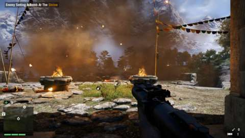
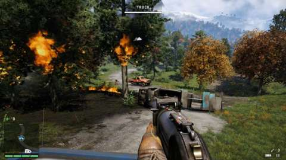
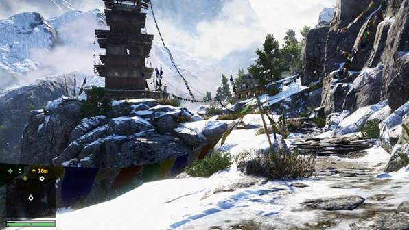
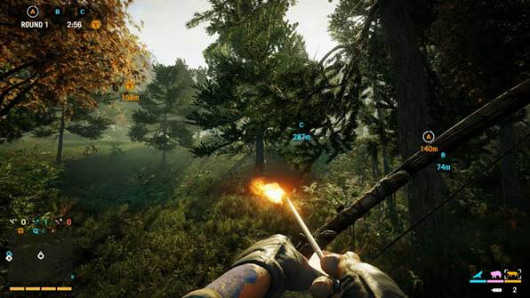

Pagan Min is a nasty piece of work. He is the vain and arrogant despot that welcomes you to the fictional Himalayan nation of Kyrat with a depraved display of violence. Min is a horrific man, and you are meant to despise him--or at least, it would seem so until he ends his tirade by inviting you to "tear shit up" while The Clash takes over the soundtrack, preparing you for a power fantasy just seconds after the game has purposefully turned your stomach. Afterwards, Min covers your head with a sack and escorts you to his opulent residence. There, in sight of a bowl of monkey heads ready to be cracked open and engorged upon, He again demonstrates his ruthlessness by plunging a fork into the back of your local guide and forcing him to bail out the window for help.
Far Cry 4 is loaded with such tonal shifts, so many that you might suspect the game is trying to make a point with them. The writing takes rare turns into the self-aware; one character, for instance, calls out the hypocrisy of an American intruding on the affairs of a foreign state, pointing guns and splattering blood in the name of "doing the right thing." But if Far Cry 4 was meant to parody the violent themes it depicts, it does a poor job of it. You are Ajay Ghale, an American who has come to Kyrat to scatter your departed mother's ashes per her wishes, though it isn't long before you have taken up the cause of The Golden Path, the same separatist group your mother helped found. Where matters of the rebellion are concerned, Far Cry 4 keeps things serious, often forcing you to choose between the wishes of the current Golden Path co-leaders, and locking yourself into one mission while foregoing its counterpart. These leaders--Amita and Sabal--both have good intentions, seeking only the best for their impoverished nation, though Sabal's insistence at one point that Amita is using her gender as a manipulation tactic makes it clear that he, and the game itself, don't always represent meaningful progress.
It's impossible to be invested in these characters, however, not after a pseudo-serious speech is followed by a confrontation with two embarrassing stoners who blow smoke in your face while embodying every possible drug-culture caricature. The story's best asset, its villain, disappears for most of the story, leaving more dialogue to a local radio personality who fantasizes about becoming a serial killer who smears feces on his victims as a calling card. Far Cry 4 does not improve upon Far Cry 3's narrative issues, but amplifies them until the story collapses into a pile of yee-haw hillbilly language, cliched tribalism, and weak political posturing. For a game primarily interested in providing a joyous first-person sandbox, Far Cry 4 is oddly adamant about choking you with its meager attempts to titillate.

Like the Nepalese-esque environments it depicts, Far Cry 4 is all about highs and lows, suffocating you with poor storytelling before setting you free into the wilderness to create thrills of your own. And those thrills can be almost overwhelming, providing the kind of headrush that was Far Cry 3's calling card. It is you and a giant map dotted with activities, each one fun enough that you want to rush towards the waypoint to see what's in store there.
Perhaps it's an outpost that need liberating from Min's army. You can force freedom upon it by sneaking around, stabbing baddies from behind and throwing knives into their comrades' foreheads in one smooth motion. But Far Cry 4's additions are tailored towards chaos, and it's difficult to escape their gravity. Throwing a simple slab of meat invites a tiger or a bear (or even a violent honey badger, a reference that would have been dated even a few years ago) to the bloody party. The creature isn't a familiar--it may turn on you once it's done feasting on Min's soldiers' meat--so there's only minor guilt in throwing a molotov cocktail into the mix and watching the flaming feline strike fear into your foes' hearts. Of course, you might be sprinting about all the while, spraying AK-47 fire around, or lobbing grenades from your launcher, the most effective sidearm available in the early game.
Or perhaps you believe in truly going big. Elephants may seem like peaceful titans, but once mounted, they are one of Far Cry 4's most destructive forces. One story mission puts pachyderms to particularly good use, offering you plentiful opportunities to overturn oncoming vehicles with a quick flip of the trunk. You haven't truly lived until you have launched an opposing soldier into the air and heard his screams. If you come to games to feel powerful, Far Cry 4 quenches that need. That isn't to say the game is easy; insta-fail stealth missions and enemy artillery can bring the frustration, but you typically have the tools to counter it. If sneaking around is making you swear, a bow and arrow will do nicely. If you're being mobbed, you can spend a token that spawns an AI companion to fight at your side.
Real-life companions are even better. A buddy (or stranger) can join you on your adventure, and the two of you become a kind of madcap duo, wreaking even more havoc on Kyrat's struggling economy by ruining and pillaging everything in sight. It's fun to get around in Far Cry 4's dinky gyrocopters, but the real joy is grappling to it and swinging to and fro as your comrade rises into the air. Should an enemy helicopter whir into view, it's tempting to take it out with a rocket, but you could always have your friend swing you into range, and blast the copter's pilot with a shotgun to the face. Should a pack of dholes (wild dogs, that is) attack, it's nice to shoot and skin them with a pal at your side. There's a pleasant sense of camaraderie to it, the two of you tromping through a creek on elephants like a gray, wrinkly caravan.

Far Cry 4 isn't content to simply provide a map loaded with icons to chase: it parades activities in front of you as if it's afraid you'll not notice just how much stuff there is to do. You liberate an outpost and drive away, and you're bombarded in ten seconds by notifications that it is already under attack. Should you return and provide support, your next departure might be met with the same instructions; should you drive off, Far Cry 4 informs you of your failure to protect the outpost. I'm grateful for the game's imperfect but helpful auto-drive feature, which allows you to hand over the wheel to the AI if you want to focus on firing your pistol at pursuing ATVs. I'm not so grateful for Far Cry 4's habit of moving the waypoint icon to nearby outposts under attack on my behalf, thus causing my vehicle to drive where the game wants, not where I want. Why is such a massive sandbox so eager to lure me away from my own adventure? Why would a game whose best story is the one I make for myself keep thrusting some other story in front of me, making me eat my broccoli before I'm allowed to have dessert?
At least the dessert is scrumptious, supported by Far Cry 4's excellent economy, which dangles goodies in front of you and dares you to go earn enough rupees to buy them. Soon you discover that your wallet needs upgrading before you can hold more rupees, and that your backpack only holds so many saleable doodads until you craft a larger one. And so off you go to hunt and skin the wildlife so that you may turn their hides into a bigger ammo pouch. You obsessively snatch herbs and flowers so you can make healing syringes and other helpful implements, and climb radio towers so that you can lift the nearby fog of war and reveal even more activities to perform. It's easy to be ensnared by this web of stuff, wanting a thing that requires that you do another thing, which in turn requires that you do even another thing. Of course, that stuff follows a recipe Ubisoft has been stewing for years now, which is filling but starting to taste too familiar. This is the Far Cry/Assassin's Creed/Watch Dogs formula on hyperdrive: no piece of real estate is safe from the stuff-web.

Kyrat is gorgeous, that much is clear.
The story at least provides plenty of diversity. Sometimes, you're pumped full of drugs and float away to Shangri-la, where you admire the dreamy visuals and sic tigers on demons; sometimes, you're maintaining oxygen levels while exploring the perilous heights of the Himalayas. Far Cry 3's missions ultimately made the greater impression: Far Cry 4's drug-destroying quest owes a clear debt to its predecessor's similar (and better) analog, and 3's hallucinogenic trips were more memorable than the sojourns to Shangri-la. Even so, Far Cry 4's best missions make good use of the game's general scale, providing intricate spreads of horizontal and vertical spaces, and giving you the freedom to approach them as you like.
The ties to earlier Ubisoft games are inescapable. You tear propaganda posters from walls in the manner of Assassin’s, and unveil new portions of the map in the manner of, well, most recent Ubisoft games. The condensed freeform missions, on the other hand, are more akin to Splinter Cell: Blacklist, though that isn't the only feature reminiscent of Sam Fisher's more recent games. Far Cry 4 features a light bit of competitive play that pits two asymmetrical teams against each other. The objectives change depending on which mode you choose, but the basics remain the same. One group plays as hunters, armed with bows and arrows, and capable of going invisible and mounting elephants; the other drives standard vehicles and selects from a full array of weapons, approaching battle with sheer force.
The best part of competitive play is that it offers many of the campaign's freedoms. You can ride the winds in your wingsuit towards a capture point, create ad-hoc walls of flame with molotovs, and snipe a competitor while he struggles to fend off an attacking bird of prey. Teams also seek to control towers that reveal hunters on the minimap (or remove them), which adds another speck of strategy to the proceedings. These five-on-five matches are open-ended delights, not so much because the battles are loaded with tension, but because they reward adaptability, and in doing so, echo the campaign.
It's a problematic campaign, certainly, forcing you to restart an entire mission from scratch if you arrive at your destination and realize you'd like a different loadout, and making you reach for the radio dial so you don't have to listen to the worst radio personality this side of the Great Wall of China. It's when you circumvent Far Cry 4's major thematic flaws, inconsistent missions, and incessant nagging that you find the game you came looking for, breathing easy and enjoying the mountains that rise in the distance and the valleys that stretch beneath you. Like the terrain if depicts, Far Cry 4 travels both high and low, representing the good, the bad, and ugly of video games all at once. It's awesome and messy and dumb and fun and annoying and gross and beautiful. Take any given adjective in your vocabulary, and chances are, it will in some way describe Far Cry 4.

Competitive multiplayer let's you really light a fire on your enemies.
The best part of competitive play is that it offers many of the campaign's freedoms. You can ride the winds in your wingsuit towards a capture point, create ad-hoc walls of flame with molotovs, and snipe a competitor while he struggles to fend off an attacking bird of prey. Teams also seek to control towers that reveal hunters on the minimap (or remove them), which adds another speck of strategy to the proceedings. These five-on-five matches are open-ended delights, not so much because the battles are loaded with tension, but because they reward adaptability, and in doing so, echo the campaign.
It's a problematic campaign, certainly, forcing you to restart an entire mission from scratch if you arrive at your destination and realize you'd like a different loadout, and making you reach for the radio dial so you don't have to listen to the worst radio personality this side of the Great Wall of China. It's when you circumvent Far Cry 4's major thematic flaws, inconsistent missions, and incessant nagging that you find the game you came looking for, breathing easy and enjoying the mountains that rise in the distance and the valleys that stretch beneath you. Like the terrain if depicts, Far Cry 4 travels both high and low, representing the good, the bad, and ugly of video games all at once. It's awesome and messy and dumb and fun and annoying and gross and beautiful. Take any given adjective in your vocabulary, and chances are, it will in some way describe Far Cry 4.